{kind=link}
{kind=link}
{kind=link}
{kind=link}
{kind=link}
{kind=link}
{kind=link}
{kind=link}


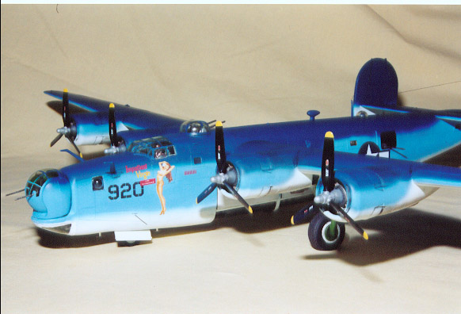
1/48 Scale Monogram/Koster PB4Y-1 Conversion
Images, text and model copyright © 2002 by Matt Swan
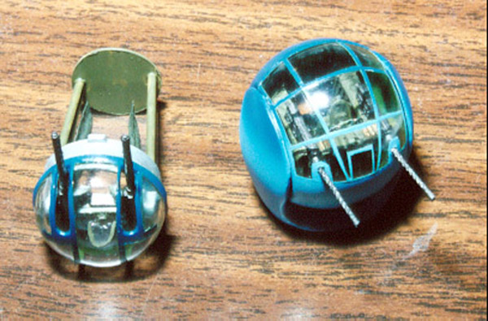
I began this project in February 2002 and did not reach completion until November 2002, 9 months! Now that is a labor of love. This whole thing started with Hyper Scale when I can across Eli Raphael’s beautiful PB4Y-2 in the archives. This is what motivated me to build this beast. I needed to do a big bomber in that beautiful Navy tricolor scheme. First, I had to acquire a Monogram B-24J and then locate a conversion kit. I found the model kit on e-Bay and paid the collector’s price for that. Other modelers on Hyperscale were so kind as to put me in touch with Bill Koster who made sure that I was set up with the correct conversion kit and got me the white metal and resin detail parts for the gun turrets. The turret details were still a little sparse so I scratch built some more detail into them with styrene sheet, fuse wire and some clear plastic cut from a battery bubble pack to make gun sights. I have to thank Bill Smith, another Hyperscaler, for the excellent detailed pictures that he provided me with of turret interiors. You can click on the image to the right for a larger picture.
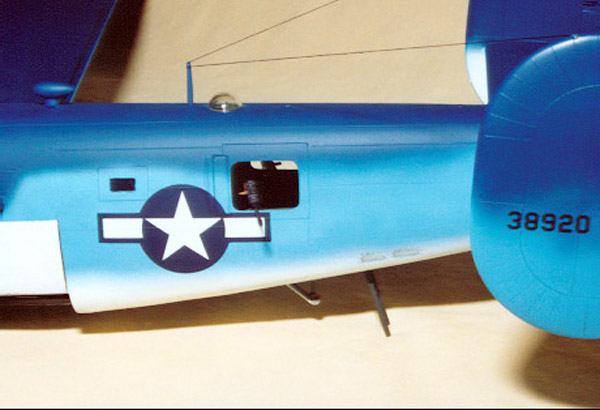
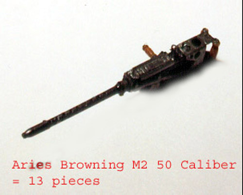
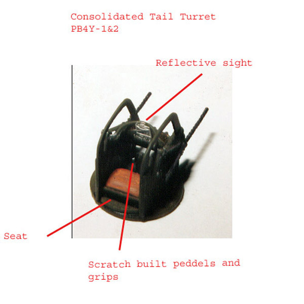
Click on the above pictures for larger images.
I replaced the waist guns with Aires Browning machine guns, which are incredible little kits all by themselves. I learned how to make resin molds and castings so I could replicate the Oxygen bottles that are placed throughout the plane. These were not used often on the PB4Y because they seldom operated at altitudes that required them but I felt that the equipment should still be present. At least I could not find any references to the contrary. I used a variety of lead fishing sinkers (painted flat black to hide them) in the forward compartments secured with silicon caulk to counterweight the craft. Using silicon can be tricky, you can’t get any on a surface that you wish to paint later or it will cause serious fish-eyes. I also had to make some severe modifications to the bombardier’s flooring. It had to be lowered and extended to fit with the new nose and the Nordan bombsite mount had to be modified to fit under the ERCO turret. I was sorely temped to leave the bomb sight out – the Navy preferred to bomb at low altitude by eyesight and experience but I could not find any information as to whether the site was left in place or removed, flip the coin, it stayed in place.
While I worked on the interior details and nose conversion I thought about what kind of exterior scheme to do. I wanted to do something different. I ended up at Navy Lib.Com checking out nose art when I ran into the “Impatient Virgin”. This was it! I had to do this craft. Eli Raphael suggested that I get in touch with Mike Grant from Mike Grant Designs who was able to make me a set of Alps decals to represent the “Impatient Virgin” artwork and the BU numbers. As you can see, he did an exceptional job.
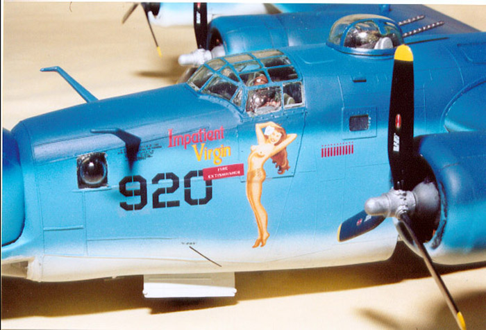
Mike also provided me with replacement Hamilton Standard logos for the propellers to replace the blobs that came from Monogram. The mission markers and national insignia came from the Monogram sheet.
For the exterior I mixed my own blues from various Testors and Model Master paints to get the shades that seemed to suit it best. I used Cutting Edge window masks for most of the glass along with some masking tape and masking solution. Let me tell you, those Cutting Edge window masks save a lot of time and backache! Especially on something like this with so many little windows. I’ve heard people complain about having to trim them sometimes and yes, I did have to trim two of them – beat the hell out of masking every individual window with tape. I weathered it with Tamiya X-19 smoke and sludge wash and finished with Polly Scale clear flat.
Overall, this was a wonderful project. The Koster parts had very nice detail and fit nearly perfectly into the monogram parts. The most difficult area was the tail turret – nothing wanted to mesh for me there and that may have been more my fault then any one else’s.
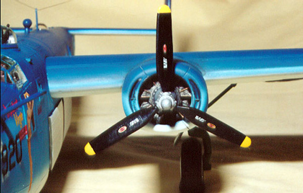
Nine months is a long time to stay focused on a single model kit and I have many Hyperscalers to thank for keeping me motivated like Howard Bulin and Dan, the Yankee Air Pirate and so many others that I can’t list them all here – thanks guys, I made to the end! And special thanks to Brett Green, without his site, Hyper Scale, and his dedication to maintaining it none of this would have happened. Now I just have to find someplace to display this monster.
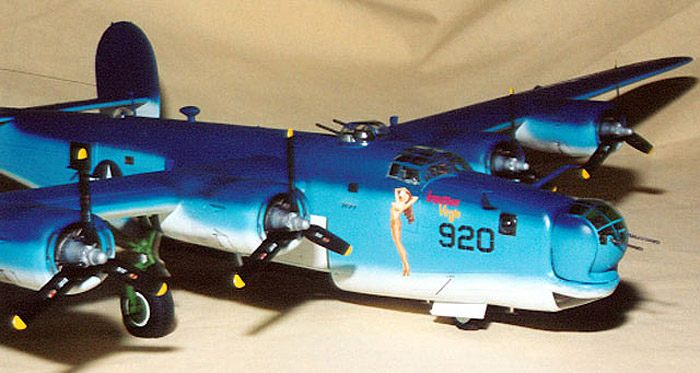
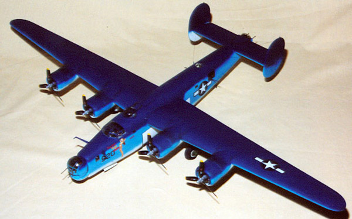
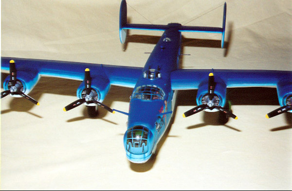
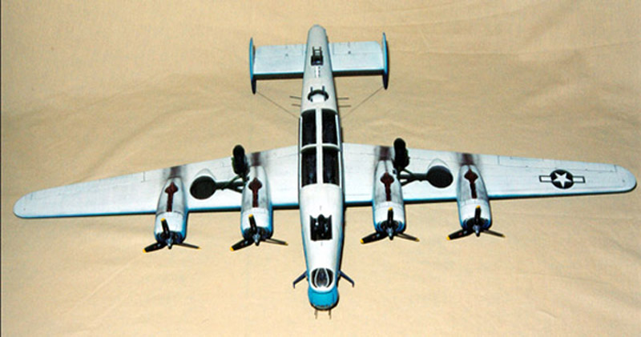
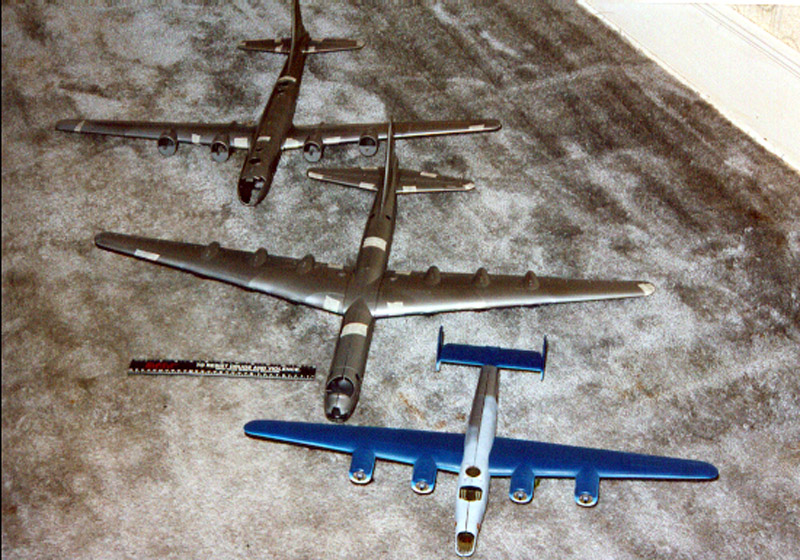
Click on the above pictures for larger images.